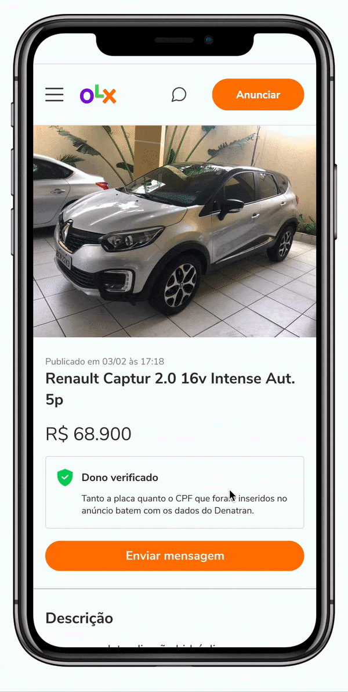
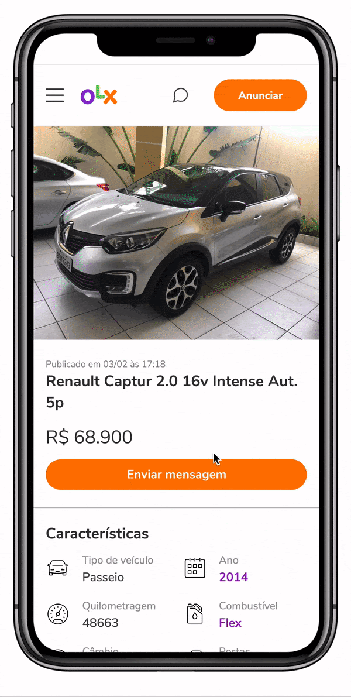
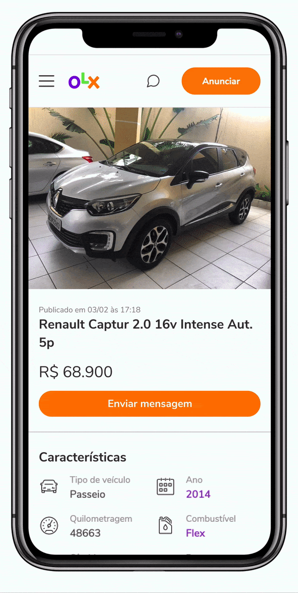
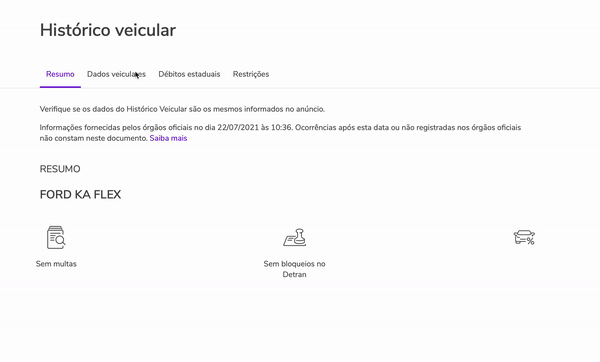

How might we make buyers feel safer while transacting cars online
- Role
- Product Designer
- Year
- 2020
- Company
- OLX
- Status
- Released
A car background check product offered to sellers as an incentive and displayed for free to buyers — reducing the uncertainty that makes online car transactions feel like a gamble.
Problem
The process of buying and selling a car is scary. OLX did not show all the necessary information for buyers to feel confident at first contact.
Solution
Provide a car background check product offered to sellers with incentives and displayed for free for buyers.
Impact
20% growth in safety perception among buyers on the platform.
For the average buyer, the ads at OLX simply do not provide enough information to be sure that the seller is not a thief or if the car even exists, let alone if the information provided is accurate.
My Role
I was the project's Main Product Designer. I led the visual and interaction explorations and worked throughout the design organization for consistency and alignment.
Problem space
Buying cars online is a gamble. Until the meeting, when both seller and buyer see each other face to face, there is no way to know if the seller is telling the truth about the car.
OLX's car listings lacked the transparency buyers needed to feel confident before making contact — leaving room for fraud, misinformation, and distrust that hurt conversion on both sides.
Product requirements
Specific
Although many details contribute to a feeling of safety, the solution should relate to car elements only.
Contextual & noninvasive
The solution should feel like part of the ad experience and not a detached value-added service.
Easy to understand
"Car-speech" is hard. The solution should communicate with both experts and novice buyers equally.
First studies
The solution required two flows: one for buyers to view vehicle data, and one for sellers to opt in and input their background check. Below are some of the design explorations for the visualization inside the car product page — each with different visual approaches that the team later explored in user testing.



Research with users showed that they ignored the component when viewing the ad.
Solution
To attract attention to the component, we researched which information from the background check was the most relevant for buyers. The three pieces of information that resonated most were:
- How many owners the car had
- How many unpaid traffic tickets the car had
- Whether the car had ever been auctioned
We used this information as the primary selling point and, to make the component even more noticeable, added a custom illustration following OLX's illustration system.
Full vehicle history page
After refining the entry-point component, we created the full visualization as a simple dedicated page with all the necessary information for the buyer. We also researched the best way to explain certain technical information that was not easily understood by OLX's user base.

Impact
20%
Growth in safety perception among buyers on the platform.
3%
Growth in conversion rate for ads that included a car background check.
4%
Of sellers reported better quality leads from ads with a background check available.